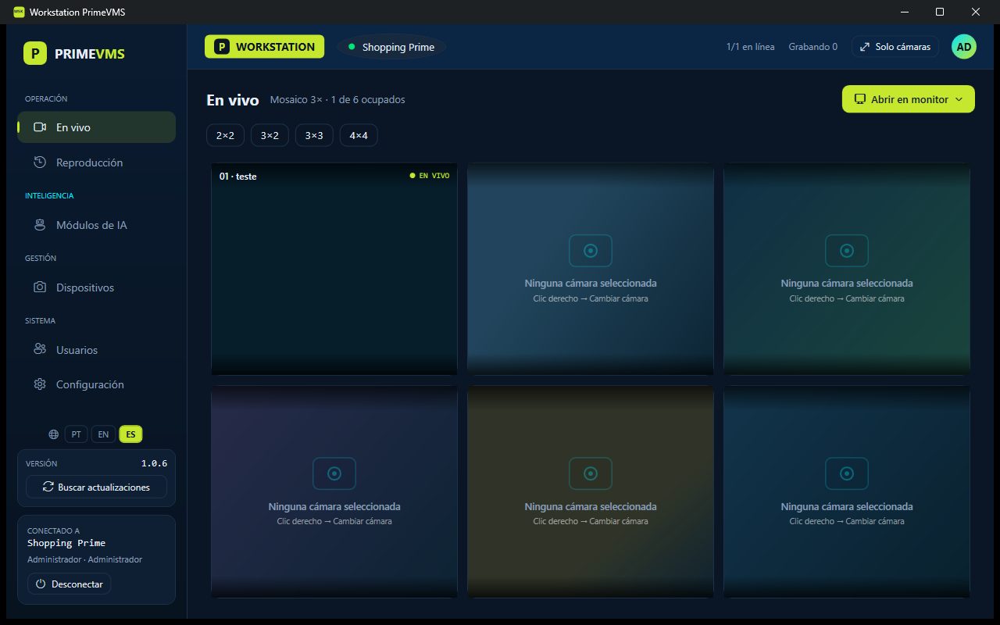

Software VMS gratuito para cámaras IP
PrimeVMS es un sistema profesional de gestión de video para CCTV. Vea en vivo, grabe las 24 horas y revise las imágenes de cualquier cámara ONVIF o RTSP. El núcleo es gratuito, sin licencia por cámara, y los módulos avanzados están disponibles en planes accesibles.

Lo esencial de un VMS, sin costo
El mismo software sirve desde una sola computadora hasta varios servidores.
Funciona con sus cámaras
Encuentra las cámaras ONVIF en la red y detecta la ruta del video RTSP. Solo ingresa el usuario y la contraseña de la cámara.
Grabación continua
Graba en disco en MP4 segmentado, sin recodificar, con catálogo de grabaciones y retención por días.
Video en vivo
Mosaicos de hasta 4×4, pantalla completa, varios monitores y videowall, con decodificación acelerada por hardware.
Reproducción
Línea de tiempo de 24 horas con zoom y marcadores. Revise varias cámaras de forma sincronizada.
Exportación
Exporte imágenes y videos con una marca de agua con su logotipo, la fecha y la hora.
Usuarios y perfiles
Perfiles de administrador, supervisor y operador, aplicados por el servidor.
Instalación distribuida
Ejecute todo en una PC o use un servidor central con varios servidores de grabación y estaciones de operación.
Actualización desde la app
Solo se descargan los archivos modificados, normalmente alrededor de 1 MB. Las versiones están firmadas y una actualización fallida se revierte automáticamente.
Núcleo gratuito, módulos pagos
El VMS no tiene licencia por cámara. Solo paga por los módulos avanzados que use.
PrimeVMS Gratuito
- Video en vivo, grabación, reproducción y exportación
- Cualquier cámara ONVIF o RTSP, sin licencia por cámara
- Usuarios y perfiles
- Una PC o servidores distribuidos
- Actualización desde la app
- Español, inglés y portugués
Módulos avanzados
- Analíticas de video con IA: conteo de personas
- Otras analíticas: objetos, cruce de línea, merodeo, filas, fuego y humo, EPP, reconocimiento facial, placas En desarrollo
- Prime Cloud: acceso remoto y móvil sin abrir puertos Próximamente
- Alta disponibilidad: servidor central redundante Próximamente
Cómo se compara PrimeVMS
Una opción moderna a los VMS que cobran por cámara.
| PrimeVMS | VMS habitual | |
|---|---|---|
| Licencia del núcleo | Gratuita, sin costo por cámara | Pago por cámara o canal |
| Cámaras | Cualquier cámara ONVIF o RTSP | A menudo atado a una marca |
| Implementación | Un instalador, de una PC a distribuido | Productos o ediciones separados |
| Actualizaciones | Desde la app, con reversión automática | Descargar y reinstalar |
| Funciones avanzadas | Módulos con planes accesibles | Incluidas en ediciones más caras |
Cómo funciona
Un instalador con tres componentes. Instálelos en una PC o distribúyalos en su red.
Storage
El servidor de grabación. Recibe el video RTSP de cada cámara, graba en disco, aplica la retención y entrega el video en vivo y grabado.
System Manager
El servidor central. Guarda cámaras, usuarios y permisos, y define qué servidor graba cada cámara.
Workstation
La aplicación del operador. Mosaicos en vivo, línea de tiempo de reproducción, varios monitores y exportación.
Preguntas frecuentes
¿PrimeVMS es gratuito?
Sí. Video en vivo, grabación, reproducción, exportación, usuarios, instalación distribuida y actualizaciones son gratuitos, sin licencia por cámara. Las analíticas con IA, Prime Cloud y la alta disponibilidad son módulos pagos.
¿Qué cámaras son compatibles?
Cualquier cámara IP con ONVIF o RTSP. PrimeVMS encuentra las cámaras ONVIF en la red y detecta la ruta del video.
¿Reemplaza a un NVR?
PrimeVMS graba las cámaras IP directamente en una PC o servidor Windows, con retención por días. También puede grabar desde grabadores existentes que ofrecen RTSP.
¿Cuántas cámaras puedo agregar?
La versión gratuita no tiene límite por cámara. El límite práctico depende del hardware y de la red. En sitios más grandes, use la instalación distribuida con varios servidores de grabación.
¿Qué idiomas hay disponibles?
Español, inglés y portugués (Brasil), en las aplicaciones, el instalador y las notas de versión.
Empiece gratis
Descargue el instalador, elija una PC o una instalación distribuida y agregue sus cámaras.